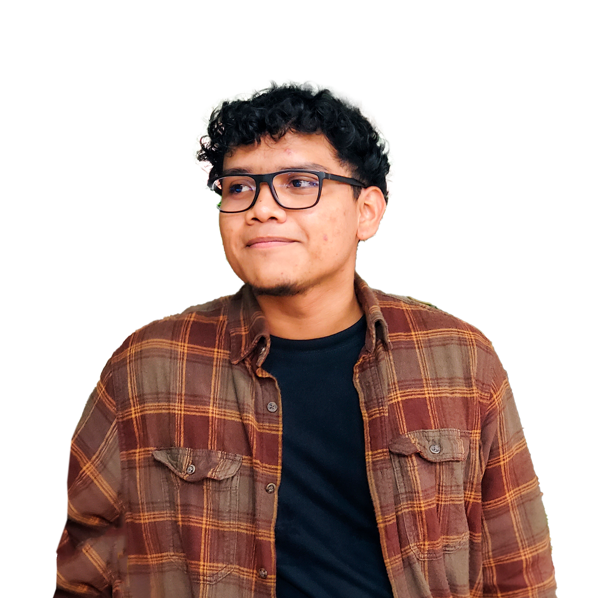
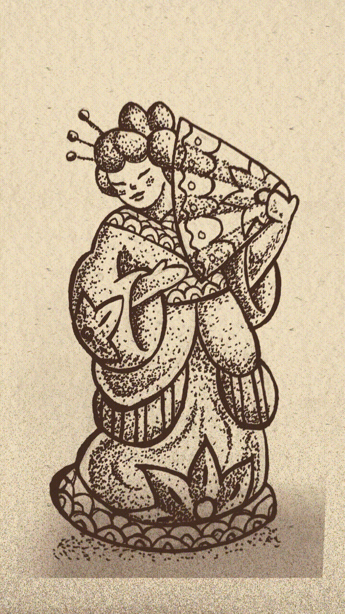
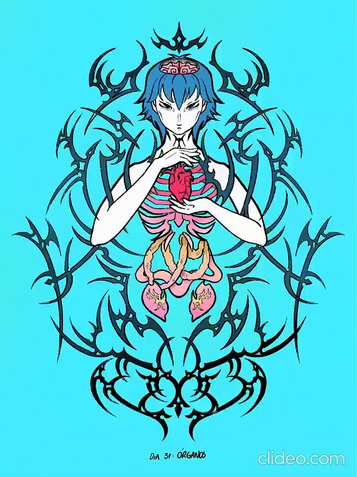
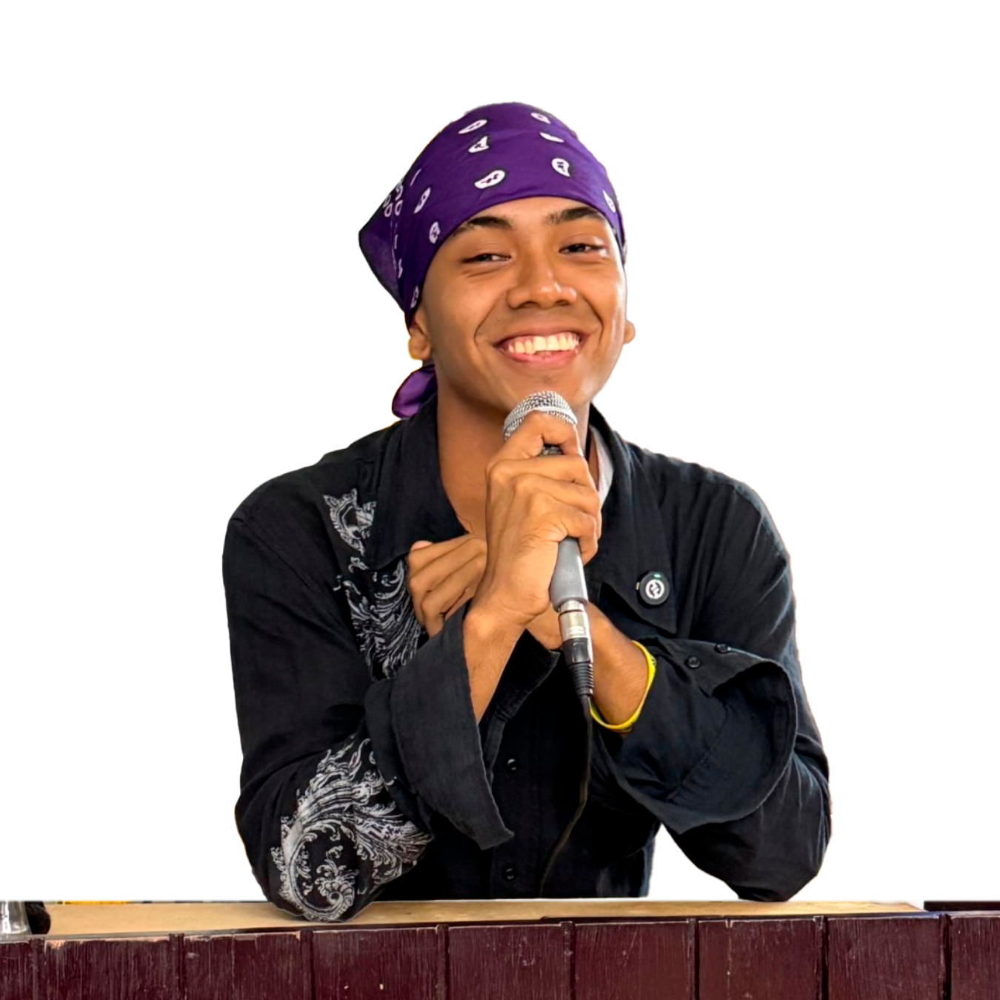

Erick García
Coyote Vivo
¿Quién es?
Ilustrador, diseñador y muralista panameño. Utiliza una estética tropical que fusiona elementos culturales e identitarios como la fauna, la flora y el arte prehispánico, integrándolos en su estilo único. En 2025, fue uno de los participantes que completó exitosamente el reto del Merachotober de principio a fin.

Adriana Frasica
Crispink
¿Quién es?
Artista e ilustradora colombiana nacionalizada panameña. Basa su arte en el surrealismo mediante el uso de una gama de colores vibrantes, explorando una amplia variedad de temáticas. Su estilo se inspira profundamente en el Art Nouveau, destacándose por composiciones detalladas e imbuidas de una marcada simetría. En 2025, completó el reto del Merachotober de principio a fin con una propuesta sumamente interesante, explorando diversos materiales y soportes para sus piezas, desde cajas de UNO hasta papel mix media.


Alfonso Magallón
Meracho
¿Quién es?
Ilustrador y dibujante panameño, creador y organizador del Merachotober. Su estilo se caracteriza por presentar un realismo mágico tropical, jugando con la perspectiva, colores vibrantes y composiciones que van desde lo geométrico hasta lo frenético.